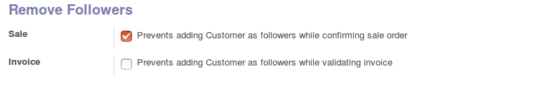

<section class="oe_container oe_dark">
    <div class="oe_row oe_spaced">
        <div class="oe_span12 oe_spaced">
            <h2 class="oe_slogan">Remove "Follower" Customer from Order</h2>
        </div>
			 <p class="oe_span12  oe_mt32">
	The module prevents  customer becoming a follower of sale order, while confirming the quotation.  
			 </p>
			 <p>
		 <p class="oe_span12 oe_spaced oe_mt32">
			The followers of a record in Odoo receives emails and internal messages sent from the record. 
			In Sale Order and Invoice, customer would be a follower by default. 
			This situation brings embarrassment  to many users, since the customer may not be an intended recipient of such communications. 
     		</p>	 
			 </p>
			 
		 <div class="oe_span12">
            <div class="oe_row_img oe_centered">
                
            </div>
        </div>
        
         <div>
            <p class="oe_span12 oe_spaced oe_mt32">
		This module from BroadTech IT Solutions, allows users to disable or prevent the customer becoming a follower of the Sale Order while confirming the quotation and, of the Invoice while validating the invoice.
	</p>
        </div>
        
         <div class="oe_span12">
        <p class='oe_mt32 oe_spaced'>
   <p></p> For any assistance please feel free to contact us: contact@broadtech-innovations.com
     </p>
        </div>
    </div>
</section>


